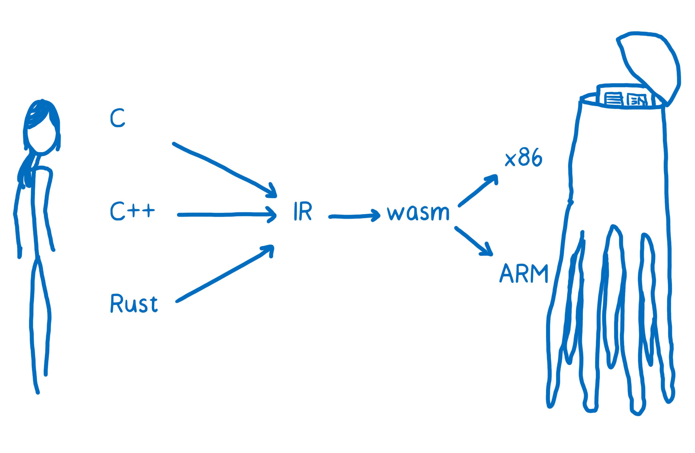
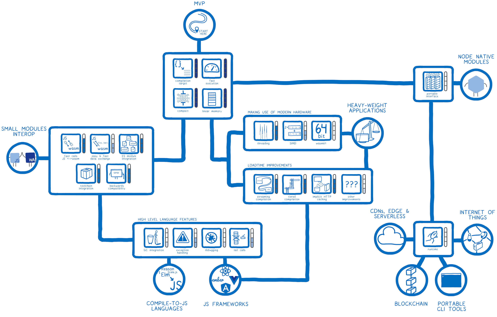

What is Web Assembly?
- binary instruction format
- Portable target for compilation
- Developed as a w3c web standard
-
Code format designed for efficient execution and compact
representation
- Fast, Safe and Well defined
- Hardware, Language and Platform independant
Why webassembly?
- Backend language on the frontend
- Native performance in the browser
- Choose your libraries (safety, speed...)
Is it new?
- WebAssembly has shipped in the 4 major browser engines.
- Since 2017!
Why not *?
- Why not use JVM?
-
Why not use existing IR like LLVM IR?
- Compact
- Modular
- Efficient
- Streamable
- Parallelizable
- Portable
WASM as a backend for LLVM

WASM and WAT, What??
-
Binary and text format - Can turn one into another:
wat2wasm
wasm2wat
- And allows live debugging of webassembly
Handwriting wasm
- Multiple languages
-
Online editor
-
Let's edit
- WASM func from JS, JS func from WASM
-
Shared simple sandboxed low level byte memory (logger demo)
Give me my java!
Current projects using wasm?
-
JS modules replacements with better efficiency and security
-
Frontend framework replacement (blazor, yew...)
- Blockchain (Polkadot, Eth2.0)
-
Games, recompiled in wasm!

What's WASI about?
- Running webassembly outside the browser!
-
Edge computing, iot, mobile, serverless, microservices,
packaging...
-
Compiling any language with a LLVM backend to wasi (nginx,
sqlite...)
Existing WASM/WASI runtimes
- wasmer
- lucet (fastly)
-
wrangler (cloudflare)
- wamr (intel)
-
Linux kernel experimentation (better perf than its equivalent
native in user space)
- Transpilers to .NET Core and JVM bytecode...
Demo